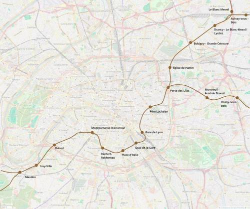
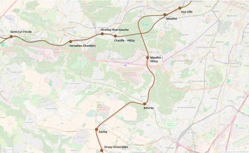

RER G Tronc commun
RER G Tronc commun
Drancy - Meudon
Création de la ligne G du RER.
Le RER G est un projet d'axe rapide entre le nord-est et le sud-ouest de Paris proposé par le Plan Ile-de-France.
Il relierait entre elles et avec le nord-est de Paris les gares de Lyon, Austerlitz et Montparnasse. Entre Montparnasse-Bienvenüe et Gare de Lyon l'infrastructure serait partagée avec l'interconnexion TGV de Paris et entre Montparnasse Bienvenüe et CDG 3 les infrastuctures seraient utilisées par le service Aéroports Express Montparnasse-Roissy. Ce tronçon serait construit à 4 voies.
Avec deux nouvelles gares à Père Lachaise et Porte des Lilas, l'est de Paris serait desservi par le réseau de RER ce qui rééquilibrerait son attractivité par rapport au centre et au nord-ouest de la ville. De même la gare de Balard renforcerait l'attractivité du quartier de Grenelle mal desservi à cause de la configuration du RER C.
La liaison Balard - Gare de Lyon devrait contribuer à décharger la ligne 8 entre la Motte-Piquet-Grenelle et Opéra et le RER A entre Auber et Gare de Lyon. La liaison Montparnasse - Gare de Lyon devrait soulager la ligne 6 entre Montparnasse et Bercy.
En fonction de la qualité des sous-sols, une gare à la mairie du XVe arrondissement pourra être ajoutée entre Montparnasse et Balard.
Voir les autres projets associés à cette ligne
Cartes
{kind=link}

Cliquer pour agrandir
{kind=link}

Cliquer pour agrandir
Stations
Si ce projet vous intéresse n'hésitez pas à le (re-)partagez sur les réseaux sociaux ou par courriel ou à en parler autour de vous.
Si vous souhaitez travailler à la concrétisation de ce projet, passez à l'action et contactez nous.
Commenter